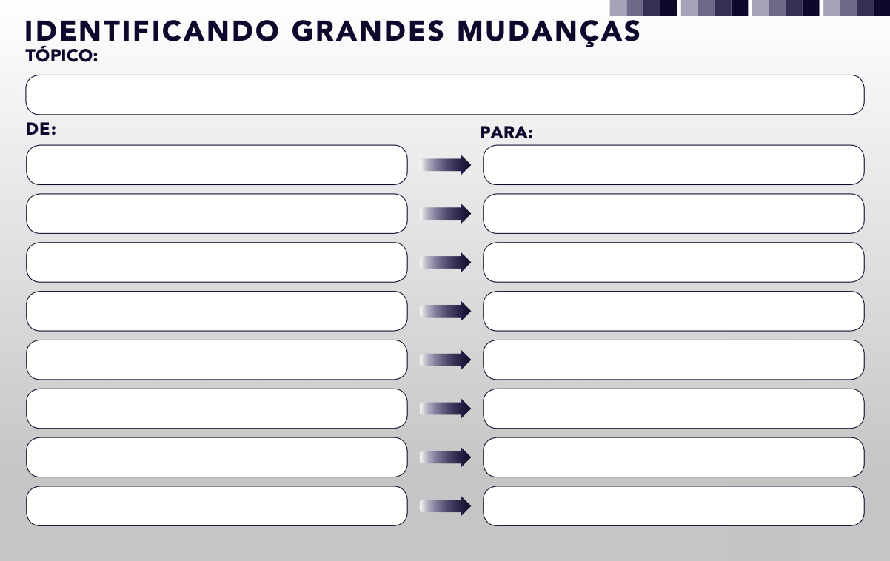

Rota A — Pelos sinais fracos (Unidade 2)
Pegue seus sinais e pergunte: "Que suposição este sinal desafia?". A suposição desafiada é o seu "De". O novo comportamento que o sinal anuncia é o seu "Para".
Curso de Administração · Disciplina Estudos de Futuros
Nas unidades anteriores, você aprendeu a coletar informação sobre o futuro de quatro maneiras diferentes: caçando sinais fracos, olhando para o passado, presente e futuro de um fenômeno com o PPF, varrendo o ambiente externo com a análise PESTEL e explorando consequências com a Roda de Futuros. Cada ferramenta entrega um tipo de insumo, mas insumo ainda não é insight. Uma pasta cheia de sinais, uma lista de fatores PESTEL e uma roda de consequências continuam sendo "material bruto". A pergunta que falta é: o que, afinal, está mudando de verdade, e de onde para onde? É isso que a ferramenta Identificando Grandes Mudanças, do Institute for the Future (IFTF), faz: ela organiza o que você já coletou em pares "De → Para".
Use o menu ao lado para navegar entre as seções. O conteúdo acompanha a rolagem da página.
01 · Fundamentos
Pense em um detetive. Ele reúne pistas, os insumos do seu trabalho, mas só resolve o caso quando liga as pistas e propõe uma explicação. As ferramentas das unidades anteriores funcionam como diferentes formas de reunir pistas sobre o futuro: cada uma entrega um tipo de material bruto, mas nenhuma delas, isoladamente, diz o que está realmente mudando.
| Unidade | Ferramenta | O que ela entrega como insumo |
|---|---|---|
| 2 | Sinais Fracos | Indícios isolados, ainda ambíguos, de que algo diferente está começando |
| 3 | PPF | Leitura do que mudou e do que permanece, a partir do passado |
| 4 | PESTEL | Fatores externos (políticos, econômicos, sociais, tecnológicos, ambientais, legais) em movimento |
| 5 | Roda de Futuros | Consequências em cadeia (1ª, 2ª e 3ª ordem) de uma mudança |
| 6 | Grandes Mudanças | Síntese: pares "De → Para" que dizem o que muda de verdade |
O IFTF organiza seu trabalho em um ciclo que ajuda a situar esta unidade: Foresight (visão de futuro) → Insight (compreensão) → Action (ação). As ferramentas das Unidades 2 a 5 alimentam o foresight; a ferramenta desta unidade ajuda a produzir o insight; as decisões que você toma a partir dele são a ação.
Nota sobre a base: a estrutura da ferramenta e o raciocínio "De → Para" vêm do material do IFTF. As rotas de prospecção, os critérios e os testes de qualidade apresentados nesta unidade são recomendações didáticas desta disciplina, construídas para conectar a ferramenta às unidades anteriores.
02 · Conceitos
Antes de usar a ferramenta, é preciso diferenciar quatro coisas que costumam ser confundidas:
O IFTF usa uma imagem útil: drivers são como nuvens; sinais são como gotas de chuva. A gota é pequena e concreta; a nuvem é grande e explica por que está chovendo. A ferramenta desta unidade trabalha no nível da nuvem, mas deve ser alimentada pelas gotas.
Fique atento: "a tecnologia está avançando" não é uma grande mudança. É uma frase tão ampla que serve para qualquer época. Uma grande mudança precisa de direção (de onde para onde) e de conteúdo (o quê, em qual contexto).
03 · A Ferramenta
O modelo do IFTF é simples e visual: um tópico no topo e uma lista de oito linhas, cada uma com duas colunas, "De" e "Para".

Tópico: _______________________________________
| De (situação atual / suposição vigente) | Para (nova situação / nova normalidade) |
|---|---|
| 1. | 1. |
| 2. | 2. |
| 3. | 3. |
| 4. | 4. |
| 5. | 5. |
| 6. | 6. |
| 7. | 7. |
| 8. | 8. |
Modelo original "Identificando Grandes Mudanças" (Identify Big Shifts) © 2015 Institute for the Future, SR-1776. Licenciado sob CC BY-NC-ND 4.0 (uso não comercial, sem obras derivadas).
04 · Método
Este é o ponto central da unidade. A ferramenta não gera ideias do nada: ela organiza o que as outras ferramentas já mostraram. Nossa recomendação é percorrer quatro rotas.
Pegue seus sinais e pergunte: "Que suposição este sinal desafia?". A suposição desafiada é o seu "De". O novo comportamento que o sinal anuncia é o seu "Para".
Para cada dimensão (política, econômica, social, tecnológica, ambiental, legal), pergunte: "O que está se movendo aqui que mudaria a forma como as coisas funcionam no meu tópico?". O PESTEL mostra os grandes vetores; é a rota mais próxima dos drivers do IFTF.
A lógica é natural: o Passado descreve a situação de origem (candidata a "De"); as Mudanças se tornam os pares; as Permanências servem de filtro; e os Futuros indicam o "Para".
As consequências de segunda e terceira ordem frequentemente revelam mudanças que você não tinha enxergado. Pergunte: "Que mudança de comportamento ou de estrutura se repete em vários ramos da roda?". Se muitos ramos apontam para o mesmo lugar, há uma grande mudança ali.
Uma mudança que aparece em uma só rota é uma hipótese. Uma que aparece em duas ou mais rotas (por exemplo, um sinal fraco que também aparece no PESTEL e na roda) é uma candidata forte. Use a triangulação para decidir quais pares merecem as suas oito linhas.
05 · Qualidade
Nossa recomendação é verificar seis critérios:
Diz o quê, onde e para quem. Evite generalidades.
Mostra claramente a passagem de um estado a outro.
"De" e "Para" falam do mesmo assunto, em lados opostos (não compare maçã com laranja).
Você consegue apontar pelo menos um sinal, dado ou fato que o apoia.
Muda algo que importa para quem decide.
Uma frase de cada lado. Se precisou de um parágrafo, ainda não está claro.
Tópico: Educação Superior
| De | Para | |
|---|---|---|
| ❌ | A educação é tradicional | A educação será moderna |
| ✅ | Diploma de graduação como principal prova de competência | Portfólio e certificações curtas como prova complementar de competência |
O primeiro par é vazio: "tradicional" e "moderno" não dizem nada verificável. O segundo é específico, direcional e pode ser buscado em evidências (vagas que dispensam diploma, microcredenciais etc.).
06 · Interpretação
Escrever os pares é só a metade do trabalho. A outra metade é interpretar. O IFTF propõe, em seu material "como interpretar um sinal", três passos que adaptamos aqui:
Qual suposição o sinal desafia? Qual é o novo comportamento?
Pergunte-se: "Se isso fosse totalmente normal daqui a alguns anos, como seria o dia a dia das pessoas e das organizações?".
Quais as implicações? Quem ganha, quem perde, que novas necessidades surgem? Aqui você pode voltar à Roda de Futuros (Unidade 5) para aprofundar.
Em materiais do IFTF, aparece o caso de um espaço de trabalho compartilhado e baseado em comunidade (Flow Club), usado para ilustrar uma mudança no modo de trabalhar em conjunto. Em outro texto do IFTF sobre a ferramenta irmã Identify Your Assets and Gaps (Güralp, 2022), o exemplo é a população idosa do Japão, que levanta a questão: que ativos e lacunas existem para atender a essa realidade? Os dois exemplos mostram a mesma lógica: partir de algo concreto e perguntar o que isso significa em escala maior.
Depois de ter os pares, procure famílias: vários pares podem ser variações da mesma grande história. Nomear o tema ajuda a comunicar.
O IFTF sugere classificar o estágio de cada sinal ou mudança como emergente, em sustentação, em auge ou em declínio. Também apresenta os Três Horizontes:
| Horizonte | Foco |
|---|---|
| Horizonte 1 | O presente que gerimos; foco em eficiência e operação. |
| Horizonte 2 | Transição; foco em experimentos e novos empreendimentos. |
| Horizonte 3 | O sistema futuro; foco em visão e transformação mais profunda. |
Pergunte a cada par: "Isso exige ação já (H1), preparo e experimento (H2) ou visão de longo prazo (H3)?".
| Teste | Pergunta | Se a resposta for "não"… |
|---|---|---|
| Evidência | Existe pelo menos um fato ou sinal real por trás deste par? | Trate como hipótese e procure evidência. |
| Norma | Isso está virando comportamento comum ou ainda é um caso isolado? | Mantenha como sinal, não como grande mudança. |
| Permanência | O que parece mudar não é, na verdade, uma necessidade que continua igual? | Reescreva o par ou descarte. |
| E daí? | Se for verdade, isso muda alguma decisão minha? | Provavelmente é irrelevante para o seu tópico. |
07 · Atenção
08 · Próximos Passos
Os pares são a matéria-prima para os passos seguintes dos Estudos de Futuros: a construção de cenários e a tomada de decisão. Uma forma prática de seguir adiante:
09 · Aplicações
Os exemplos abaixo são ilustrativos: servem para treinar o formato e não apresentam dados de pesquisa.
| De | Para |
|---|---|
| O diploma é a principal prova de competência | Portfólios e certificações curtas complementam o diploma |
| O estudante frequenta o campus em horários fixos | O estudante combina momentos presenciais e on-line |
| O professor é a fonte principal do conteúdo | O professor passa a curar e orientar o uso de múltiplas fontes |
| De | Para |
|---|---|
| A compra acontece na loja ou no site | A compra acontece onde o cliente estiver, em vários canais integrados |
| O cliente procura o produto | O produto é recomendado ao cliente com base em seus hábitos |
| A loja física serve para vender | A loja física serve também para experimentar, retirar e se relacionar |
| De | Para |
|---|---|
| Produtividade medida pela presença | Produtividade medida por entregas e resultados |
| Equipe reunida em um só local | Equipe distribuída com encontros presenciais pontuais |
| Carreira em uma única empresa | Carreira feita de múltiplas experiências e projetos |
Em cada exemplo, identifique (a) qual rota (A, B, C ou D) poderia ter produzido o par e (b) qual permanência impede que o par seja exagerado.
10 · Estudo de Caso
Aviso metodológico: os dados a seguir foram reunidos a partir de fontes secundárias (imprensa e entidades do setor) que citam o Banco Central do Brasil e a Febraban. Para uso em publicações, recomenda-se conferir os números nos relatórios oficiais do Banco Central. Dados até o fim de 2025.
O Pix é o sistema de pagamentos instantâneos do Banco Central. Foi lançado em 16 de novembro de 2020 (com fase de testes iniciada em 3 de novembro). Suas bases foram construídas nos anos anteriores: um grupo de trabalho em maio de 2018, a definição de requisitos em dezembro de 2018, a decisão de o Banco Central administrar o sistema em agosto de 2019 e a definição da marca em fevereiro de 2020. O Banco Central observou experiências de outros países, como Austrália, Estados Unidos, México e a União Europeia.
No passado, as transferências mais comuns eram DOC e TED, com horários, tarifas e burocracia. A mudança foi o pagamento instantâneo, 24 horas, a qualquer dia. As permanências: a necessidade de transferir dinheiro com segurança e o papel dos bancos regulados.
Pesam cinco das seis dimensões: política/regulatória (iniciativa do Banco Central), econômica (custos e inclusão), social (hábito e inclusão financeira), tecnológica (infraestrutura de pagamento instantâneo) e legal (regras e limites). A dimensão ambiental praticamente não aparece.
Experiências internacionais de pagamento instantâneo funcionavam como sinais externos.
Da mudança central (pagamento instantâneo) derivam consequências como queda do uso de DOC/TED, novas formas de cobrança por QR code e, depois, riscos de fraude.
Tópico: Pagamentos no Brasil
| De | Para |
|---|---|
| Transferência com horário, tarifa e demora | Transferência instantânea, a qualquer hora |
| Dinheiro em espécie e cartão como meios dominantes no pequeno comércio | QR code e chave Pix no pequeno comércio |
| Pessoas sem relação com o sistema financeiro | Pessoas iniciando transações eletrônicas pela primeira vez |
| Cobrança recorrente via boleto ou débito | Cobrança recorrente automatizada (Pix Automático, em operação desde 16/06/2025) |
| Rede de pagamentos concentrada em poucos arranjos privados | Infraestrutura pública (SPI) liquidando a maioria dos Pix |
| Fraudes com meios tradicionais | Fraudes por engenharia social, com novos limites e controles do BC |
| (linha deixada em branco de propósito) | (linha deixada em branco de propósito) |
| (linha deixada em branco de propósito) | (linha deixada em branco de propósito) |
Nem toda grande mudança nasce do mercado. O Pix foi uma mudança induzida por política pública, preparada por anos, o que mostra por que olhar para a dimensão política do PESTEL pode antecipar rupturas que parecem "repentinas".
11 · Vídeo
Como assistir: observe quais mudanças de comportamento (e não apenas números) o Banco Central destaca e tente escrevê-las como pares "De → Para".
Saiba mais: Assistir no YouTube
12 · Bibliografia
Nota ao professor: completar autores, datas e URLs das referências da imprensa e do IFTF antes da publicação, conforme a ABNT. Os links exatos devem ser conferidos e inseridos pelo professor na publicação, pois endereços de páginas institucionais mudam com frequência.